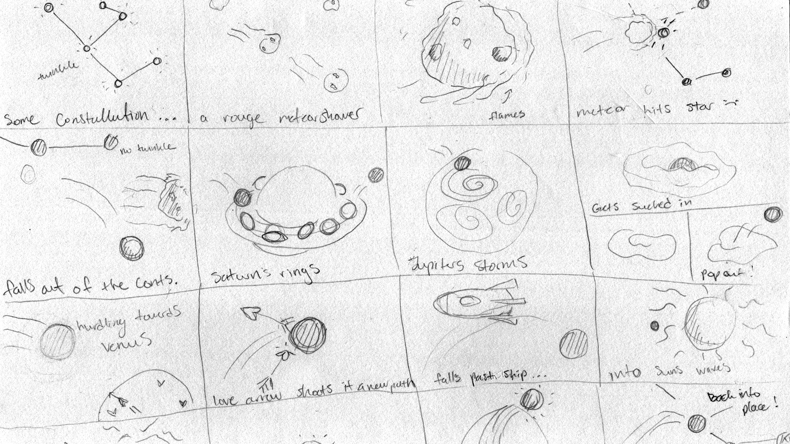

Constellation
Starry Adventures
Animation Project for Motion Graphics

About The Project
Goal
The goal was simple: animate a ball through a terrain. With no limits stopping me, I decided to tell a story of a star (our ball) getting knocked out of its constellation and traveling around other planets to everytually returning home.
Research and Sketching
When sketching out my storyboard I had to keep the pacing in mind. It is important it's clear to the audience what the main subject (the ball) is doing or where it's going.
Scope
Project Type: Animation
Software: After Effects
